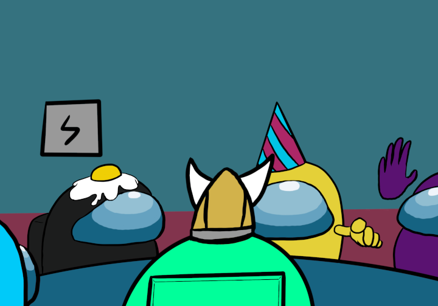

First Discussion
 You look at Green and calmly say
You: No, if you were innocent you would have reported the body immediately. But, I saw you stand in fron the body for a few seconds and then turn around to see mee spot you. This was self-report, everyone!
Orange: Well, it is possible that he could have self reported. It has to be one of you two as no one else was there as a witness. We'll vote green first, and if it's not him, we'll vote green immediately. Who is favor of voting Green off?
Everyone: *raises hand*
Green: Ya'll, don't be stupid! Black is lying about-
Orange: Sorry buddy, but you gotta take one for the team.